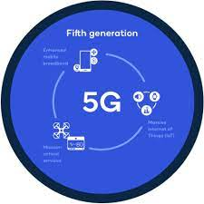
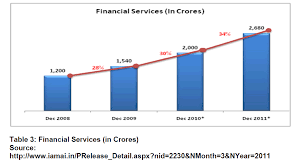

In telecommunications, 5G is the fifth generation technology standard for broadband cellular networks, which cellular phone companies began deploying worldwide in 2019, and is the planned successor to the 4G networks which provide connectivity to most current cellphones.[2] 5G networks are predicted to have more than 1.7 billion subscribers worldwide by 2025, according to the GSM Association.[3] Like its predecessors, 5G networks are cellular networks, in which the service area is divided into small geographical areas called cells. All 5G wireless devices in a cell are connected to the Internet and telephone network by radio waves through a local antenna in the cell. The main advantage of the new networks is that they will have greater bandwidth, giving higher download speeds,[2] eventually up to 10 gigabits per second (Gbit/s).[4] Due to the increased bandwidth, it is expected the networks will increasingly be used as general internet service providers for laptops and desktop computers, competing with existing ISPs such as cable internet, and also will make possible new applications in internet of things (IoT) and machine to machine areas. 4G cellphones are not able to use the new networks, which require 5G enabled wireless devices.
The increased speed is achieved partly by using higher-frequency radio waves than previous cellular networks.[2] However, higher-frequency radio waves have a shorter useful physical range, requiring smaller geographic cells. For wide service, 5G networks operate on up to three frequency bands – low, medium, and high.[5][2] A 5G network will be composed of networks consisting of up to three different types of cells, each requiring specific antenna designs as well as providing a different tradeoff of download speed to distance and service area. 5G cellphones and wireless devices connect to the network through the highest speed antenna within range at their location:
DIAGRAM

BELOW HERE YOU WILL FIND THE STOCK MARKET DETAILS ON 5G
Investors should look for management commentary on 5G networks and 5G wireless services on company earnings calls. Many investors focus on Apple's semiconductor supply chain and the smartphone ecosystem. But, a wide range of tech companies are building 5G ecosystems for private networks that deliver business-to-business services.
Telecom industry group 5G Americas forecasts that the addressable market to incorporate 5G into private business networks will jump sharply over the next five years, to $16.9 billion in 2025 from $1.9 billion in 2020.
How fast consumers will upgrade to 5G iPhones amid the lack of a new, "killer" application is still being debated among Wall Street analysts.
Apple rolled out new 5G iPhones in October. In the December quarter, demand for 5G iPhones came in strongest in China.
South Korea and China currently lead in 5G network coverage while Europe lags. But China's big three telecom companies have slowed investments in 5G networks in early 2021.
Led by T-Mobile US (TMUS), U.S. wireless firms are in the early stages of deploying 5G wireless services using high-performance
On 15 October 2015 the Internet Society published this 50-page whitepaper providing an overview of the IoT and exploring related issues and challenges. You may download the complete document at the link above. The Executive Summary is included below to provide a preview of the full document.
Learn more about our work to strengthen the security and resiliency of the Internet.
This IoT Overview whitepaper is also available in Russian and in Spanish.
Revision history:
15 Oct 2015 – Initial publication.
22 Oct 2015 – PDF file updated with higher quality cover image and a title page.
6 Jan 2016 – PDF file updated with new graphic design. Filename changed to include “-en” for English.
18 Apr 2016 – Russian translation published.
17 Aug 2016 – Spanish translation published.
Executive Summary
The Internet of Things is an emerging topic of technical, social, and economic significance. Consumer products, durable goods, cars and trucks, industrial and utility components, sensors, and other everyday objects are being combined with Internet connectivity and powerful data analytic capabilities that promise to transform the way we work, live, and play. Projections for the impact of IoT on the Internet and economy are impressive, with some anticipating as many as 100 billion connected IoT devices and a global economic impact of more than $11 trillion by 2025.
At the same time, however, the Internet of Things raises significant challenges that could stand in the way of realizing its potential benefits. Attention-grabbing headlines about the hacking of Internet-connected devices, surveillance concerns, and privacy fears already have captured public attention. Technical challenges remain and new policy, legal and development challenges are emerging.
This overview document is designed to help the Internet Society community navigate the dialogue surrounding the Internet of Things in light of the competing predictions about its promises and perils. The Internet of Things engages a broad set of ideas that are complex and intertwined from different perspectives. Key concepts that serve as a foundation for exploring the opportunities and challenges of IoT include:
IoT Definitions: The term Internet of Things generally refers to scenarios where network connectivity and computing capability extends to objects, sensors and everyday items not normally considered computers, allowing these devices to generate, exchange and consume data with minimal human intervention. There is, however, no single, universal definition.
Enabling Technologies: The concept of combining computers, sensors, and networks to monitor and control devices has existed for decades. The recent confluence of several technology market trends, however, is bringing the Internet of Things closer to widespread reality. These include Ubiquitous Connectivity, Widespread Adoption of IP-based Networking, Computing Economics, Miniaturization, Advances in Data Analytics, and the Rise of Cloud Computing.
a broad spectrum of expectations, while still fostering innovation in new technology and services.
Interoperability / Standards
A fragmented environment of proprietary IoT technical implementations will inhibit value for users and industry. While full interoperability across products and services is not always feasible or necessary, purchasers may be hesitant to buy IoT products and services if there is integration inflexibility, high ownership complexity, and concern over vendor lock-in.
In addition, poorly designed and configured IoT devices may have negative consequences for the networking resources they connect to and the broader Internet. Appropriate standards, reference models, and best practices also will help curb the proliferation of devices that may act in disrupted ways to the Internet. The use of generic, open, and widely available standards as technical building blocks for IoT devices and services (such as the Internet Protocol) will support greater user benefits, innovation, and economic opportunity.
STOCK MARKET ON IOB

Top Internet of Things stocks
There are many ways to invest in IoT. Here are five options, ranging from a tried-and-true tech giant to smaller pure-play companies.
IoT Stock Description
Cisco Systems (NASDAQ:CSCO) The leading provider of enterprise networking hardware
Alarm.com (NASDAQ:ALRM) Cloud-based platform for managing connected home and business devices
Dexcom (NASDAQ:DXCM) A maker of glucose monitoring medical devices
Impinj (NASDAQ:PI) A maker of radio-frequency identification (RFID) products
Global X Internet of Things ETF (NASDAQ:SNSR) An exchange-traded fund that includes a wide array of IoT companies
Source: Company websites
1. Cisco Systems
Cisco Systems (NASDAQ:CSCO) is the leading provider of enterprise networking hardware. Because its products form the backbone of the internet, the tech giant benefits from the explosion of internet-enabled devices.
Cisco sells networking hardware designed for handling large numbers of connected devices, including rugged, durable products aimed at industrial applications. On the software side, Cisco provides the Cisco Kinetic platform and other tools for managing IoT data and devices.
Cisco is also one of the largest cybersecurity companies. The company offers hardware, software, and services aimed at securing networks against threats, including those specifically targeting IoT systems.
Cisco is a low-risk means of investing in IoT. The company is supremely profitable, having generated adjusted net income of $13.7 billion on revenue of $59.3 billion in fiscal 2020. Cisco is sensitive to global economic conditions given that its customer base includes many large companies, organizations, and governments, but investing in the stock is a good way to gain exposure to IoT without taking big risks.
This sensitivity to economic conditions is playing out during the pandemic, with the company experiencing a pause in demand from some customers as they grapple with economic uncertainty. However, the company’s recent guidance calls for a significant improvement in sales growth, a sign that Cisco is starting to turn the corner.
The pandemic has put pressure on Cisco’s sales, but the long-term story hasn’t changed. When this crisis has passed, Cisco will remain as dominant as ever.